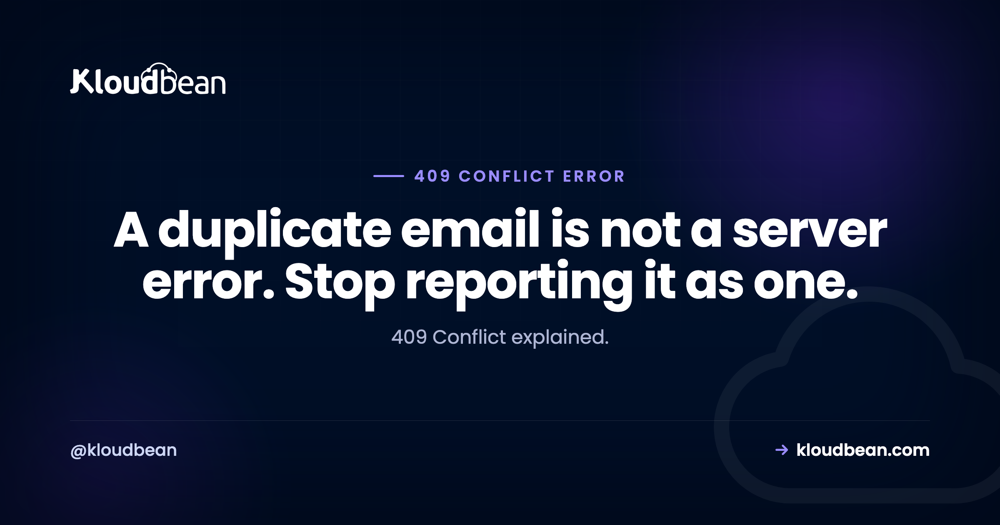

409 Conflict: The Status Code Most APIs Return as a 500 by Mistake

409 Conflict means your request was understood, you were allowed to make it, and the current state of the thing you are changing does not permit it. Not malformed, which is a 400. Not forbidden, which is a 403. The request is simply at odds with reality as the server currently understands it. It is the most underused code in the 4xx range, and the reason is that most of the situations calling for it get caught by an exception handler and reported as a 500 instead, which turns a clear, actionable answer into a mystery for whoever is consuming your API.
It means the request conflicts with the current state of the resource. The four common cases are creating something that already exists, updating a record somebody else changed first, violating a state rule such as cancelling an already-shipped order, and submitting the same operation twice. If you are receiving one, read the response body, because a well-built API explains which conflict occurred. If you are building one, catch unique constraint violations and return 409 with a clear message rather than letting them surface as a 500.
The four conflicts you will actually meet
| Situation | What conflicts | Right response |
|---|---|---|
| Creating a duplicate | A unique value already exists | 409 naming the field |
| Concurrent update | Somebody changed it since you read it | 409, or 412 with a precondition |
| State rule violation | The transition is not legal from here | 409 explaining the current state |
| Repeated submission | The operation already happened | Idempotency key, then the original result |
All four share a shape worth noticing: the client did nothing wrong in the sense of syntax or permissions, and retrying the identical request unchanged will fail identically. That is exactly what separates a conflict from a transient failure, and it determines whether a retry is sensible. More on that below, because it is the distinction people get wrong most often.
Stop returning 500 for a unique constraint violation
This is the most common mistake in this area, so it goes first. Somebody registers with an email that already exists. Your database rejects the insert. The exception propagates, your framework catches it, and the client receives a 500.
That response is wrong in a way that costs real time. A 500 tells the client the server broke and a retry might work, so clients retry. Nothing improves, because the situation is entirely deterministic. Meanwhile your error tracker fills with alerts for a condition that is not a fault at all: a user picked an email somebody else already uses.
The fix is to catch the specific database error and translate it. Postgres gives you precise codes:
// Node with node-postgres
try {
await db.query('INSERT INTO users (email) VALUES ($1)', [email]);
} catch (err) {
if (err.code === '23505') { // unique_violation
return res.status(409).json({
error: 'email_taken',
message: 'That email address is already registered.',
field: 'email',
});
}
throw err; // genuinely unexpected, let it 500
}The codes worth knowing, because each implies a different response:
| Postgres code | Meaning | HTTP | Retry? |
|---|---|---|---|
23505 | unique_violation | 409 | No. Deterministic. |
23503 | foreign_key_violation | 409 or 422 | No |
40001 | serialization_failure | 409 or 503 | Yes. Retry with backoff. |
40P01 | deadlock_detected | 409 or 503 | Yes. Retry with backoff. |
That retry column is the part worth internalising. A unique violation will never succeed on retry, so retrying is pure waste. A serialization failure or deadlock is the database telling you two transactions collided and one was rolled back, and retrying is not just acceptable but expected under stricter isolation levels. Treating those two categories the same is how systems end up either hammering a doomed request or giving up on one that would have worked.
MySQL is less granular but workable: error 1062 is a duplicate entry, 1213 is a deadlock, 1452 is a foreign key failure. Same reasoning applies.
Lost updates, and doing concurrency properly
Two people open the same record. One saves. The other saves thirty seconds later and silently overwrites the first change. Nobody sees an error and the first edit is simply gone. This is the lost update problem, and the reason it deserves attention is that the failure is invisible: no 409, no 500, no log line, just data that quietly disappeared.
HTTP has a built-in answer, and it reuses the same validators as caching. Send an ETag when the client reads the resource, and require it back when they write:
GET /orders/42
→ 200 OK
ETag: "v3"
PUT /orders/42
If-Match: "v3"
→ 200 OK if the current version is still v3
→ 412 Precondition Failed if it moved onWhich raises the question people ask here: is that a 409 or a 412? The distinction is real and worth getting right. 412 Precondition Failed is correct when the client sent a precondition such as If-Match and it did not hold. 409 Conflict is correct when the client sent no precondition and the server discovered the conflict itself. So a client that participates in the protocol gets 412, and a client that does not gets 409.
Implementing it is less work than it sounds, because you probably already have a version column or an updated timestamp:
-- The update only applies if the version is unchanged
UPDATE orders
SET status = $1, version = version + 1
WHERE id = $2 AND version = $3
RETURNING version;const { rowCount, rows } = await db.query(sql, [status, id, expectedVersion]);
if (rowCount === 0) {
return res.status(412).json({
error: 'version_conflict',
message: 'This record changed since you loaded it. Reload and reapply your changes.',
});
}Zero rows updated means the version moved, so somebody got there first. No locks held, no transaction kept open while a human decides what to type, and the conflict surfaces at the moment it matters. That is optimistic concurrency, and for anything involving a human editing a form it is almost always the right choice over pessimistic locking.
One thing the error message should always do is tell the user what to do next. "Version conflict" alone is useless to a person who just lost ten minutes of typing. Say that the record changed, and ideally show them what changed.
Idempotency keys, so the second click is harmless
A user submits a payment. The response is slow. They click again. Now you may have two payments, or a 409 from a duplicate check, and neither outcome is good.
The proper answer is an idempotency key: a unique value the client generates per logical operation and sends with the request. The server records the key with the result, and if the same key arrives again it returns the original result instead of doing the work twice.
POST /payments
Idempotency-Key: 8f14e45f-ea1b-4c2e-9c31-6d1b4a3f7c20
Content-Type: application/json
{"amount": 4999, "currency": "usd"}const key = req.header('Idempotency-Key');
if (!key) return res.status(400).json({ error: 'idempotency_key_required' });
// Claim the key, or discover it was already used
const claimed = await redis.set(`idem:${key}`, 'in-progress', { NX: true, EX: 86400 });
if (!claimed) {
const stored = await redis.get(`idem:result:${key}`);
if (stored) return res.status(200).json(JSON.parse(stored));
return res.status(409).json({ error: 'request_in_progress' });
}
const payment = await createPayment(req.body);
await redis.set(`idem:result:${key}`, JSON.stringify(payment), { EX: 86400 });
return res.status(201).json(payment);The NX flag is what makes this correct rather than approximate: the key is claimed atomically, so two simultaneous requests cannot both believe they are first. The in-progress case is a legitimate 409, because the operation genuinely is in flight and the right answer is to wait rather than to start another.
Redis is a natural home for this because you want fast atomic writes with an expiry, which is exactly what it is good at. Managed Redis covers the setup, and caching patterns covers similar atomic primitives.
Worth saying plainly: if you take payments or send messages, idempotency keys are not an optimisation. They are the difference between a slow network charging a customer once and charging them twice.
State machines, and the error message that helps
The fourth category. Cancelling an order that already shipped. Publishing something already published. Deleting an account with active subscriptions. The request is well-formed and permitted, and the object is not in a state where it makes sense.
409 is right here, and what distinguishes a good API is the body:
{
"error": "invalid_transition",
"message": "Cannot cancel an order that has already shipped.",
"current_state": "shipped",
"allowed_transitions": ["return_requested"]
}Naming the current state and the legal moves turns a dead end into something the client can act on, and it removes an entire class of support conversation. It costs a few lines to build and it is the single clearest marker of an API somebody thought about.
If you are on the receiving end
Getting 409s from somebody else's API. Work in this order.
Read the body. Most APIs that bother returning 409 also explain it. The message usually names the conflicting field or the current state, which is your answer.
curl -sS -X POST https://api.example.com/v1/users \
-H 'Content-Type: application/json' \
-d '{"email":"taken@example.com"}' -w '\nHTTP %{http_code}\n'Do not retry blindly. A 409 usually means the identical request will fail identically. Retrying a duplicate creation forever is a common bug in job queues, where a permanent failure gets treated as transient and the job retries until it exhausts its attempts. Distinguish conflicts you should surface to a user from genuinely transient collisions.
Check whether you already succeeded. A frequent cause is a first request that worked while its response was lost, so your retry conflicts with your own earlier success. Fetch the resource before concluding anything failed. This is exactly the problem idempotency keys prevent.
Re-read, then re-apply. For a version conflict, fetch the current state, reapply your intended change on top of it, and submit again with the new version. Do not simply resubmit your stale copy, which is how you overwrite somebody else's work while trying to be helpful.
| Symptom | Likely cause | Action |
|---|---|---|
| 409 on every attempt to create | The record already exists | Fetch it, do not retry |
| 409 only under concurrent editing | Version or ETag mismatch | Re-read and reapply |
| 409 after a timeout and retry | Your first request succeeded | Check, then adopt idempotency keys |
| 409 intermittently under load | Serialization failure or deadlock | Retry with backoff and jitter |
| 500 where you expected 409 | Unhandled constraint violation | Map the database error code |
| Silent data loss, no error | No concurrency control at all | Add version checks |
That last row is the one to worry about. If your application has never returned a 409 for a concurrent edit, that may mean nobody edits concurrently, or it may mean you are losing updates silently. Only one of those is comfortable.
Infrastructure, briefly
Conflict handling is application logic, so most of this is yours to write. Two parts of it are infrastructure, though.
The database is where conflicts are detected, so its configuration matters: isolation level determines whether you get serialization failures at all, and connection behaviour under load determines how often collisions happen. Managed MySQL, MariaDB, and PostgreSQL on Kloudbean sit in the same dashboard as the application, which matters when you are correlating a rise in deadlocks with a traffic pattern. And managed Redis is what makes idempotency keys practical, since you need atomic writes with expiry rather than another table to clean up.
The honest boundary: nobody else can define your state machine or decide which fields are unique. What the platform removes is the operational side of running the database and cache that your conflict handling depends on.

The rest of the trail
For neighbouring status codes, 400 Bad Request, 401 Unauthorized, 403 Forbidden, and 429 Too Many Requests, which covers the backoff and jitter referenced above. On the validators reused for optimistic locking, 304 Not Modified. For the database side, PostgreSQL performance tuning and connection pooling. And for the atomic operations behind idempotency keys, managed Redis hosting and caching patterns.
Deploys that tell you what broke.
Deploy from Git, watch the build output as it runs, and open the app error log when a process refuses to start. Managed processes restart on crash, and backups are automatic.
- ✓ Live build logs
- ✓ Deployment history
- ✓ Logs viewer
- ✓ Managed process restarts
- ✓ Automatic backups
- ✓ Git deploy
FAQ
What does HTTP 409 Conflict mean?
It means the server understood the request and you were permitted to make it, but the current state of the resource does not allow it. Common cases are creating something that already exists, updating a record somebody else has changed, and attempting a state transition that is not legal from where the object currently is. Retrying the same request unchanged will normally fail the same way.
What is the difference between 409 and 400?
A 400 means the request itself was malformed and could not be understood. A 409 means it was perfectly well-formed and understood, and it conflicts with current state. If your payload is valid JSON with all the right fields and the server still refuses because a value is already taken, that is a conflict rather than a bad request.
Should a duplicate entry return 409 or 500?
409. A unique constraint violation is a predictable, client-fixable condition rather than a server fault, and reporting it as 500 tells clients to retry something that can never succeed while filling your error tracker with non-incidents. Catch the specific database error, for example Postgres 23505, and return 409 naming the conflicting field.
When should I use 412 instead of 409?
Use 412 Precondition Failed when the client sent a precondition such as If-Match and it did not hold, since you are reporting that a stated condition failed. Use 409 when the client sent no precondition and the server discovered the conflict on its own. A client participating in the protocol gets 412; one that is not gets 409.
How do I prevent lost updates?
Use optimistic concurrency. Send an ETag or a version number when the client reads the resource, then include it in the write and make the update conditional on it, for example WHERE id = $1 AND version = $2. If zero rows update, somebody got there first, so return a conflict rather than overwriting. This avoids holding locks while a human fills in a form.
Should I retry after receiving a 409?
Usually not, because a conflict is normally deterministic and the identical request will fail identically. The exception is a database serialization failure or deadlock, Postgres 40001 and 40P01, where two transactions collided and retrying with backoff is expected. Treating those the same as a duplicate-key conflict is a common bug in job queues.
What is an idempotency key?
A unique value the client generates for each logical operation and sends with the request, so a repeated submission returns the original result instead of performing the work twice. The server claims the key atomically, stores the result against it, and replays that result on a repeat. For payments or messages this is the difference between a slow network charging a customer once or twice.
Why has my API never returned a 409?
Either nobody edits the same records concurrently, or you have no concurrency control and are silently losing updates. The second is more common than teams expect, because it produces no error at all: the later save simply overwrites the earlier one and nothing is logged. Adding version checks makes the conflict visible rather than creating it.